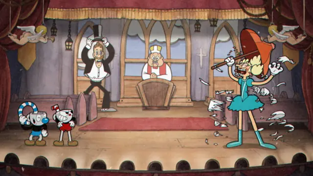
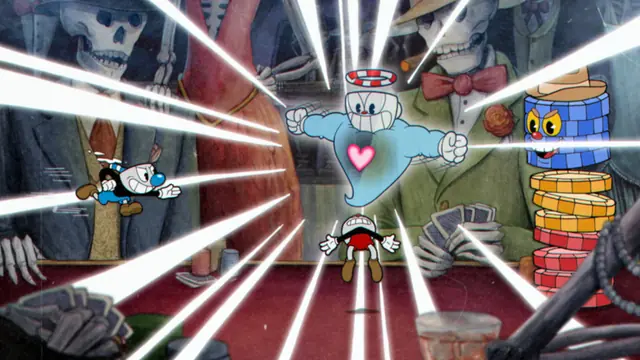
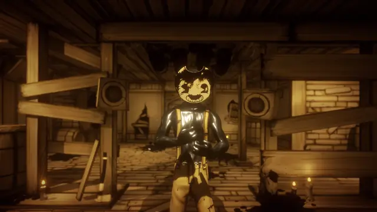
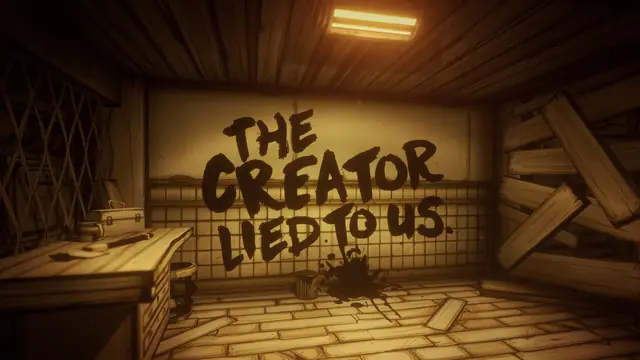
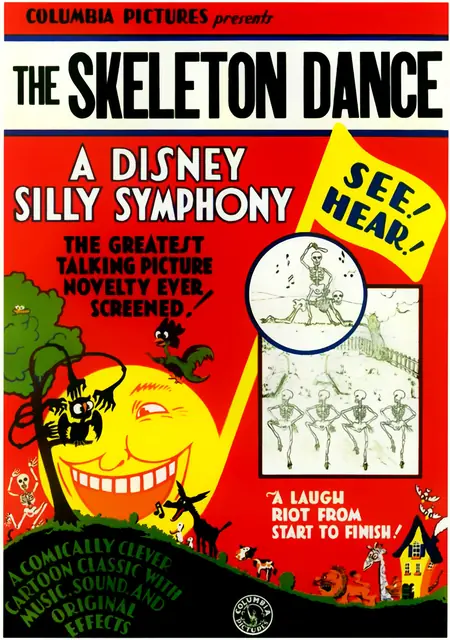
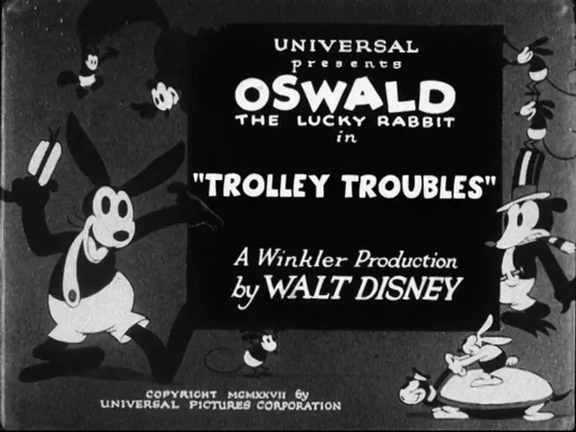
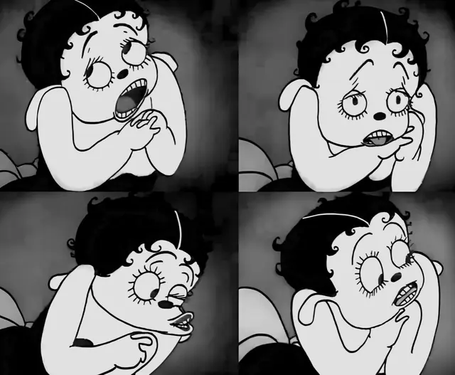
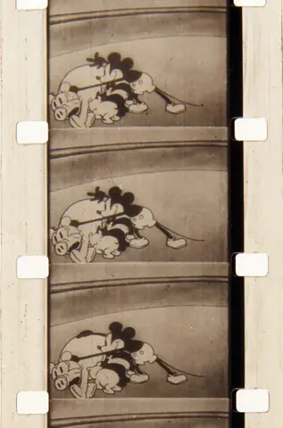
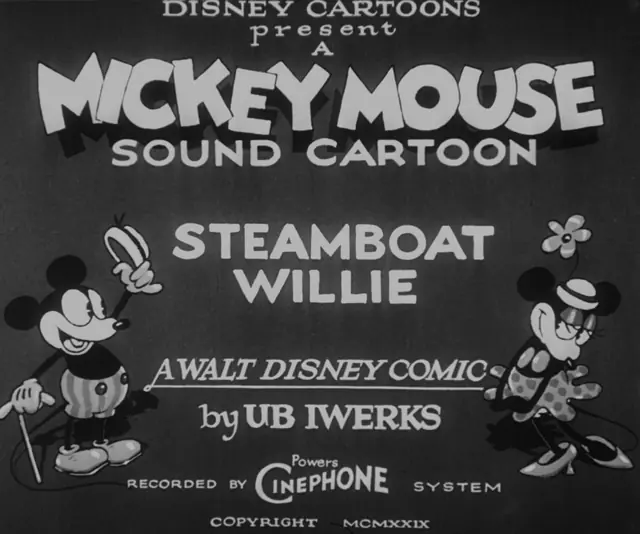

The feel
Rubber hose is the look of the early sound cartoons, where bodies squash and stretch as if they had no bones and limbs flop around like noodles.1 Characters bob up and down to the beat, props come alive and join in, and any object or body part can turn into a musical instrument.1 Nothing in this world is fixed: everything can be moulded into something else, and the whole space of the cartoon is drawn as elastically as the characters.2
The same cartoons are famous for their macabre imagination, and Fleischer's Swing You Sinners! (1930) plays like a nightmare captured on film.1 Cuphead's creators grew up preferring the creepy, surreal Fleischer shorts, where a character could go "from super happy to just insane and showing his gums like a wild dog".3 Maja Moldenhauer sums up rubber hosing as "no bones, no joints. You personify objects. You can get creepy."4 Bendy and the Ink Machine began when theMeatly built a world sketched like a cartoon, found it creepy and gave it a monster.5
- bouncy
- inky
- mischievous
- musical
- macabre
- scratchy
Where it comes from
Bill Nolan is credited with inventing the rubber hose approach in the silent Felix the Cat and Krazy Kat shorts,1 and while drawing Felix from about 1922 to 1924 he rounded out the cat's shapes, so that he moved more naturally and was quicker to draw.2 Felix, "a rubber ball on legs", became the standard model for cartoon characters, and Disney's Oswald the Lucky Rabbit was a straight copy of him; when Disney lost the rights to Oswald, he changed the ears and produced Mickey Mouse.6 Sound pushed the style further:2 Steamboat Willie (1928) took the country by storm, and The Skeleton Dance (1929) added carefully synchronised music.6 Fleischer's New York studio, whose Betty Boop cartoons were frequently nightmarish,6 was the rubber hose capital of the world, but the style fell out of favour by the mid-1930s as Disney led the move to more believable movement.1 Cuphead and Bendy and the Ink Machine brought it back to games in 2017.7,5
Core elements
Noodle limbs
Arms and legs are the same width all the way along and bend in a curve rather than at a joint.2 Heavy or muscular characters can have shapely legs and visible joints, but most characters of average size get thin, hose-like limbs.2
Round characters with pie-cut eyes
Felix set the template: round-headed and big-eyed, built for flexibility and quick to draw.6 Pie-cut eyes, white gloves and two-button pants became the motifs most associated with these cartoons.1 Disney gave Mickey white gloves in 1929 to make his hands look more human and to stand out against his black body.8
Animation synced to music
Early sound cartoons synchronised constantly, with every step of a character matching a beat in the soundtrack.2 Animals, props and body parts are played as instruments, as when Mickey squeezes a duck like bagpipes and plays a cow's teeth like xylophone keys in Steamboat Willie.2,9 The term Mickey Mousing has long been used as a put-down for this tight sync.2
Living objects and transformations
Inanimate objects come alive and join the action, characters detach their limbs or heads for a sight gag, and crazy transformations turn up everywhere.1 Oswald could use his own head as a bowling ball or pull off his ears to use as oars.10
Macabre imagery
These cartoons are famous for their macabre imagination.1 With sound, skeletons could tap out xylophone music,2 and The Skeleton Dance (1929) is a whole short of skeletons that come to life and dance at night until they return to their graves just before sunrise.2 Bendy's lead programmer, Mike Mood, says old cartoons naturally look creepier as time goes on, which made the horror easy.5
Aged film texture
Chad Moldenhauer found that in old film "nothing was perfect"; even the focus was imperfect, so everything in Cuphead is slightly blurred.7 The dust, hairs and noise over the picture were scanned from real film, not made digitally.7
How to do it
Construct characters from round shapes
Start from round, simple shapes that take little effort to draw and can be kept in constant motion, as Felix was.6 Give every limb one width from end to end and bend it in a curve, never at a joint,2 then add the classic kit of pie-cut eyes, white gloves and two-button pants.1
Ink with tapered lines
Cuphead was drawn on paper and inked on paper rather than on cels, then coloured digitally, which saved the team a ton of time.7 Maja Moldenhauer says the style couldn't be captured digitally: the pen tapers, and the weight shifts through each line between thin and thick.4 Study the line weights in the old cartoons and how their tapers change from frame to frame.7
Animate on ones at 24 fps
In the 1930s artists drew all 24 frames of every second, until studios in the late 1930s and 1940s found they could animate on twos, holding each drawing for two frames and drawing only 12.4,11 Chad Moldenhauer finds something "very weird and surreal" in seeing every frame drawn.11 Cuphead animates on ones at 24 frames a second while the game itself runs at 60, for responsive play.12
Time the action on a bar sheet
Fix the tempo before you animate, as Disney's Wilfred Jackson did when he linked a metronome's beats per minute to sound film's new standard of 24 frames a second.13 Directors then timed each action to beats and tempos on a bar sheet, and the music was composed during or after animation to their timings.13 Count the frames for every action and sound,2 and layer the beat as a Steamboat Willie story sketch does, with Mickey's body keeping time on every other beat and his shoulders and foot on each beat.2
Give every action a sound
Follow the standard set in Steamboat Willie: a sound for every major action, and a slide whistle for anything flying through the air.2 Pair a stretching arm with a slide whistle and a bounce with a spring.2 The sounds need not be true to life: when they are unbelievable, the sound itself becomes a gag.2
Paint backgrounds and add film grain
Paint the backgrounds by hand in watercolour, as Cuphead does.12 Soften the whole image slightly and lay real film dust, hairs and noise over it; Cuphead's were scanned from film.7 Keep any flicker within photosensitivity limits: a flash is a 10% change in luminance, and flashing fails at more than about three times a second over 20% or more of the screen.14
Record the score with a live band
Many old cartoons had orchestral scores, but Cuphead chose a thirties big band, with ragtime for every platforming level.15 Nearly all of it was played live and recorded on vintage microphones, aiming for the sound of the era without just sounding old.15
Cheat sheet
- Frame rate
- 24 fps on ones; the game itself at 60 fps12
- Limbs
- One width end to end, bending in a curve, not at a joint2
- Line
- Inked by hand, tapering between thick and thin4
- Timing
- Beats and tempos on a bar sheet, at 24 fps13
- Sound
- A sound for every major action, a slide whistle for flight2
- Type
- Custom fonts from 1930s comics lettering and title cards7
Do
- Keep limbs one width from end to end and bend them in curves, not at joints.2
- Put a gag in every shot, as Dave Fleischer expected of his animators.1
- Let anything in the scene come alive, transform or turn into an instrument.1
- Check pupil shapes, expressions, rubber limbs, cycle timing and motion lines against the old cartoons as you animate, as Studio MDHR did.3
- Learn how a character moves by recreating shots from the real cartoons, as Epic Mickey's animators did: "how Mickey moves is who Mickey is".10
Avoid
- Elbows, knees and realistic motion. In A Spanish Twist (1932) a dancer's elbows and knees appear once her dance seems to switch to rotoscoping, the more realistic style that would later replace rubber hose.2
- Digital crispness. Old film was never perfect, and Cuphead blurs everything slightly to match.7
- Minstrel-show caricature. Many early sound cartoons borrowed music, phrases and blackface characters from minstrelsy, stereotypes now known to be false, hurtful and archaic.2
- Tidy plots and morals. The originals run on dream logic and end with nothing resolved and no lesson learned.1
- Fast flicker. Flashing more than about three times a second over 20% or more of the screen can trigger seizures, so reduce its contrast, frequency or size.14
Tools and tutorials
- Rubber hose animation
A short history of the style and its studios.
- The Animator's Survival Kit
Richard Williams's animation manual. Chad Moldenhauer studied it for half a year before animating Cuphead.11
- OpenToonz
Free 2D animation software with an Xsheet for timing drawings frame by frame.
- Krita
Free paint program with frame-by-frame animation and pressure-sensitive brushes.
- Toon Boom Harmony
Professional software for hand-drawn and rigged 2D animation.
Palette
Sampled from Steamboat Willie, Bendy and the Ink Machine and Cuphead. Ink, browns, greys and creams for the monochrome reels, and two saturated colours for when the cartoon goes to colour.
Feel the vibe
Listen
Big band with Brazilian percussion, recorded live. Chad Moldenhauer wanted a thirties big band rather than the orchestral sound of many old cartoons.15
YouTubeSung by the barbershop quartet Shoptimus Prime, whom Chad Moldenhauer first brought in for the title screen of the early demos.15
YouTubeThe whole 1929 short. Almost every movement on screen is paired with a note or a sound effect.2
YouTubeFrom Bendy and the Ink Machine. Listen for how a cartoon melody can turn eerie.
YouTubeThe whole Fleischer short. Calloway was one of the jazz acts on Fleischer soundtracks,1 and Cuphead's King Dice was always meant as a Calloway character.15
YouTube
More references









Games
- Cuphead
The landmark. Study its animation on ones, its watercolour backgrounds and its scanned film dust.12,7
- Bendy and the Ink Machine
Horror in a world sketched like a cartoon, first made in a five-day game jam.5
- Bendy and the Dark Revival
The sequel. Compare how it carries the first game's ink look into new spaces.
- MOUSE: P.I. For Hire
A black and white first-person shooter whose team studied Fleischer and Terrytoons cartoons and hired animators who specialise in hand-drawn work.16 The rubber hose bounce shows most in the idle animations, the NPCs and the interface.16
Film, art and more
- Out of the Inkwell
The inspiration for this page's inkwell host. Fleischer's silent series starred Ko-Ko the Clown and mixed live action with drawing.6
- Steamboat Willie
Iwerks turned nearly everything in it into an instrument.9 Public domain in the US since 2024.17
- The Skeleton Dance
The first Silly Symphony, with almost every movement matched to the music.2
- Minnie the Moocher
A Fleischer Betty Boop short with Cab Calloway and His Orchestra. Study how its ghosts move to the song.
- Felix the Cat
Designed for flexibility and quick to draw, Felix became the standard model for cartoon characters.6
- Cuphead: Fast Rolling Dice Game
Players roll dice together against bosses such as The Root Pack and Hilda Berg, with the video game's art style kept intact.18
Sources
- 1The Wild Classics Of Rubber Hose Animation That Inspired ‘The Cuphead Show!’
- 2Stopping the Show: Early Sound Animation, Spectacle, and the Cinema of Attractions
- 3Cuphead
- 4Xbox's 'Cuphead' Was Made With Nearly Extinct Cartoon Techniques
- 5Ink Demons & the Indie Canadian Game Scene: An Interview with ‘Bendy and the Ink Machine’ Programmer, Mike Mood
- 6Animation
- 7How Cuphead nailed the look and feel of classic 1930s cartoons
- 8Marie, Serris, France (Ask the Walt Disney Archives)
- 9Ub Iwerks, Walt Disney. Steamboat Willie. 1928
- 10Warren Spector Chats Epic Mickey!
- 11Cuphead: Bringing 1930s style to 21st century games
- 12Cuphead
- 13‘Well, it’s about time!’ Renewing the lost art of musical timing in cartoon animation for contemporary animators, directors and composers
- 14Xbox Accessibility Guideline 118: Photosensitivity
- 15Kristofer Maddigan Interview: A Jazzy, Ragtimey, Big-Band Score
- 16The Animation Challenge Behind 'Mouse: P.I. For Hire': Making Rubber Hose Work In A Video Game
- 17Public Domain Day 2024
- 18Insider Look - Cuphead Fast Rolling Dice Game